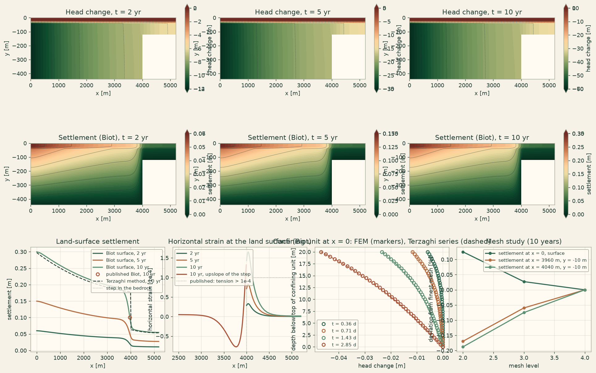
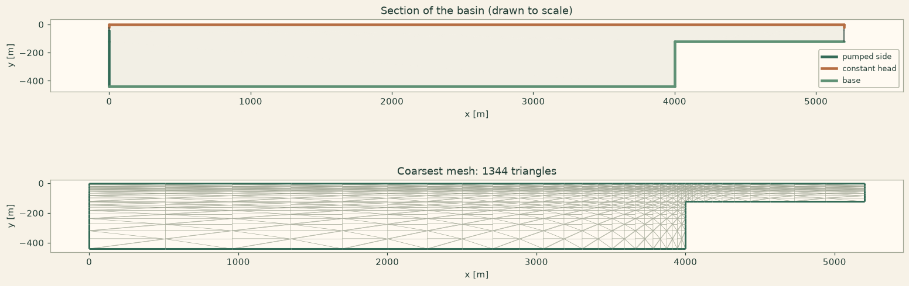

Docs › Examples › Aquifer compaction over a bedrock step
Poroelasticity · 2D
Aquifer compaction over a bedrock step
Ten years of groundwater withdrawal from a layered aquifer system over a buried bedrock step: head decline, land subsidence and the tension that opens fissures.
Run locally with OneSimulation. The example downloads are free. Running them requires an activated runtime. OneSimulation 1.0 · CPython 3.13 on macOS (Apple Silicon), Ubuntu 22.04 (x86-64), and Windows x64. Installation and activation · View pilot plans. Scope of the reference checks.


What it computes
The layered basin is read from STEP files with named faces; the model lives on its cross-section, with the material of each layer assigned by region. OneSimulation solves plane-strain Biot poroelasticity with quadratic elements and BDF2 on three meshes and compares it with the uncoupled Terzaghi compaction method. The script that builds the STEP files comes with the notebook.
What it checks
The Biot settlement above the bedrock step is 0.104 m against the published 0.10 m, the Terzaghi settlement 0.181 m against the published value above 0.18 m, and the largest surface strain 1.66e-4; the three quantities change by 0.03 % to 0.14 % between the two finest meshes.
Geometry
The notebook starts at the import of the CAD files terzaghi_aquifer_compaction.step, terzaghi_aquifer_compaction_confining.step: STEP (AP242), readable by any CAD program, with the names of the faces that the boundary conditions use. Put them next to the notebook.


The geometry script
The script terzaghi_aquifer_compaction_geometry.py builds the geometry with the CAD objects of OneSimulation and writes the files. Change a dimension there, run it, and run the notebook again.
"""Geometry of the OneSimulation example "Aquifer-system compaction above a bedrock step".
Builds a 100 m thick slice of the basin with the CAD objects of OneSimulation: the deep part of
the lower aquifer left of the bedrock step, the lower aquifer above the step, the confining unit
and the upper aquifer. Writes terzaghi_aquifer_compaction.step with the whole slice and
terzaghi_aquifer_compaction_confining.step with the confining unit alone. The faces keep the name
of their layer, for example deep.x_min or upper.y_max; the example computes on the cross-section
z = 50 m.
"""
from onesim.cad.d3 import Box
width, step, thickness = 5200.0, 4000.0, 100.0
deep = Box(length=step, width=320.0, height=thickness, origin=(0.0, -440.0, 0.0)).named(
"deep"
)
lower = Box(
length=width, width=80.0, height=thickness, origin=(0.0, -120.0, 0.0)
).named("lower")
confining = Box(
length=width, width=20.0, height=thickness, origin=(0.0, -40.0, 0.0)
).named("confining")
upper = Box(length=width, width=20.0, height=thickness, origin=(0.0, -20.0, 0.0)).named(
"upper"
)
(deep | lower | confining | upper).save("terzaghi_aquifer_compaction.step")
confining.save("terzaghi_aquifer_compaction_confining.step")The notebook
The complete notebook, cell by cell. Run it to produce the figures and the comparison printout.
Fluid in the pores of an aquifer carries part of the weight of the overlying sediments. When pumping lowers the pore pressure, the solid skeleton has to take over that load and the sediments compact; at the land surface this appears as subsidence. Where the sediment thickness changes abruptly over a buried bedrock step, the compaction is uneven and the ground is stretched horizontally, the classical mechanism for earth fissures.
The set-up is the idealized basin section of S.A. Leake and P.A. Hsieh, Simulation of deformation of sediments from decline of ground-water levels in an aquifer underlain by a bedrock step, U.S. Geological Survey Open-File Report 97-47, 1997:
| layer | depth | conductivity \(K\) | skeletal storage \(S_{sk}\) | Young's modulus | Poisson's ratio |
|---|---|---|---|---|---|
| upper aquifer | 0-20 m | 25 m/d | \(10^{-5}\) 1/m | \(8\cdot10^{8}\) Pa | 0.25 |
| confining unit | 20-40 m | 0.01 m/d | \(10^{-4}\) 1/m | \(8\cdot10^{7}\) Pa | 0.25 |
| lower aquifer | 40-440 m | 25 m/d | \(10^{-5}\) 1/m | \(8\cdot10^{8}\) Pa | 0.25 |
The bedrock under the right part of the basin (\(x>4000\) m) rises to 120 m depth. At the basin centre (\(x=0\)) the head in the lower aquifer is lowered by 6 m per year for 10 years; the upper aquifer is held at constant head.
The basin comes from the CAD file terzaghi_aquifer_compaction.step, the confining unit alone from terzaghi_aquifer_compaction_confining.step; the script terzaghi_aquifer_compaction_geometry.py builds both with the CAD objects of OneSimulation. The faces carry the name of their layer (deep: lower aquifer left of the step, lower, confining, upper):
| sides | flow | mechanics (Biot) |
|---|---|---|
deep.y_min, deep.x_max, lower.y_min: base with the step | no flow | fixed |
deep.x_min, lower.x_min: lower aquifer at \(x=0\) (pumping) | head \(-(6\ \mathrm{m/yr})\,t\) | roller |
confining.x_min, confining.x_max, lower.x_max | no flow | roller |
upper.x_min, upper.x_max | head held constant | roller |
upper.y_max: land surface | head held constant | traction free |
Two models. The Terzaghi method solves transient groundwater flow, \(S_{sk}\,\partial_t h-\nabla\cdot(K\nabla h)=0\), and stacks the one-dimensional compaction \(-S_{sk}\,h\,\mathrm dy\) from the base upward. The Biot method couples Darcy flow and plane-strain elasticity:
Heads are in metres, times in days; stiffness is divided by \(\rho g\), so the pore pressure of the Biot model is the head change.
import numpy as np
from onesim.cad.exchange import load
from onesim.meshing import Geometric, merge_blocks, rectangle_block, region_mesh
from onesim.numerics import Numerics
from onesim.numerics.fem import FiniteElement, Lagrange, Nitsche
from onesim.numerics.linear import SparseDirect
from onesim.numerics.nonlinear import Newton
from onesim.numerics.time import BDF, AdaptiveTimeStep
from onesim.physics.geotechnics import (
BiotConsolidation,
BiotFixedComponent,
BiotNormalTraction,
GroundwaterFlow,
PoreFluidFlux,
PrescribedPorePressure,
)
from onesim.physics.solid_mechanics import FixedDisplacement
from onesim.results.comparisons import convergence
from onesim.results.storage import Output
from onesim.simulation import (
OutwardFluxBoundary,
PrescribedValueBoundary,
Problem,
Simulation,
regionwise,
)
from onesim.simulation.initial_conditions import InitialValue
from onesim.visualization import plots, theme
theme.set()Geometry and mesh
section cuts the loaded solids at mid-thickness; the sides of the section keep the face names. A graded block of triangles over the bounding rectangle, with rows on the layer boundaries and a column on the step, is restricted to the basin by region_mesh. Three levels halve the cells.
solid = load("terzaghi_aquifer_compaction.step")
basin = solid.section((0, 0, 1), origin=(0, 0, 50.0))
confining = load("terzaghi_aquifer_compaction_confining.step").section(
(0, 0, 1), origin=(0, 0, 50.0)
)
sides = basin.boundaries
width, depth = basin.size[:2]
step, shelf = 4000.0, -120.0
base = sides["deep.y_min"] | sides["deep.x_max"] | sides["lower.y_min"]
outlet = sides["deep.x_min"] | sides["lower.x_min"]
sealed = sides["confining.x_min"] | sides["confining.x_max"] | sides["lower.x_max"]
constant_head = sides["upper.x_min"] | sides["upper.x_max"] | sides["upper.y_max"]
levels = [2, 3, 4]
meshes = []
for level in levels:
x = np.r_[
step * Geometric(12 * level, ratio=20.0, toward="end").reference(),
step + (width - step) * Geometric(6 * level, ratio=12.0).reference()[1:],
]
y = np.r_[
-depth
+ (depth + shelf) * Geometric(5 * level, ratio=6.0, toward="end").reference(),
shelf + 80.0 * Geometric(3 * level, ratio=3.0, toward="end").reference()[1:],
np.linspace(-40.0, -20.0, 2 * level + 1)[1:],
np.linspace(-20.0, 0.0, level + 1)[1:],
]
block = rectangle_block(
(0.0, -depth), width, depth, (len(x) - 1, len(y) - 1), grading=(x, y)
)
meshes.append(
region_mesh(
merge_blocks([block]).triangulated("alternating"), basin, geometry=basin
)
)
fig = plots.figure(2, 1, size=(14, 5))
plots.geometry(
basin,
selection={"pumped side": outlet, "constant head": constant_head, "base": base},
labels=False,
title="Section of the basin (drawn to scale)",
ax=fig[0],
)
plots.mesh(
meshes[0],
groups=("all",),
legend=False,
title=f"Coarsest mesh: {meshes[0].cell_count} triangles",
ax=fig[1],
)
plots.show()Models
Material values differ between the confining unit and the aquifers: regionwise takes the confining unit read from its own file as the region. Both models run with second-order BDF and error-controlled time steps over ten years.
year, decline, poisson = 365.25, 6.0 / 365.25, 0.25
layered = lambda in_confining, in_aquifers: regionwise(
((confining, in_confining),), default=in_aquifers
)
shear, lame = 1 / (2 * (1 + poisson)), poisson / ((1 + poisson) * (1 - 2 * poisson))
unit_stiffness = np.diag([2 * shear] * 3 + [shear] * 3) + lame * np.pad(
np.ones((3, 3)), (0, 3)
)
youngs_modulus = layered(8e7 / 9820.0, 8e8 / 9820.0)
head_at_outlet = lambda time, coordinate: [-decline * time]
steps = AdaptiveTimeStep(
initial=year / (2**19 - 1),
minimum=1e-6,
maximum=year,
relative_tolerance=1e-3,
absolute_tolerance=1e-3,
)
elements = dict(
spatial=FiniteElement(
element=Lagrange(2), boundary_enforcement=Nitsche(penalty=16)
),
linear_solver=SparseDirect(),
time_integrator=BDF(order=2),
)
biot = BiotConsolidation(
domain=basin.domain(),
kinematics="plane_strain",
biot_coefficient=1.0,
fluid_viscosity=1.0,
elastic_stiffness=lambda x, y: youngs_modulus(x, y, 0 * x)[:, None, None]
* unit_stiffness,
specific_storage=layered(1e-5, 1e-6),
permeability=layered(0.01, 25.0),
)
coupled = Problem(
name="Biot method, bedrock step",
geometry=basin,
physics=(biot,),
boundary_conditions=(
FixedDisplacement(physics=biot, boundary=base, value=(0.0, 0.0)),
BiotFixedComponent(
physics=biot,
boundary=sides.all - base - sides["upper.y_max"],
component="x",
),
BiotNormalTraction(physics=biot, boundary=sides["upper.y_max"], value=0.0),
PrescribedPorePressure(physics=biot, boundary=outlet, value=head_at_outlet),
PrescribedPorePressure(physics=biot, boundary=constant_head, value=0.0),
PoreFluidFlux(physics=biot, boundary=base | sealed, flux=0.0),
),
initial_conditions=(InitialValue(biot.fluid_content, 0.0),),
)
solver = Numerics(
**elements,
nonlinear_solver=Newton(
linear_solver=SparseDirect(),
jacobian="analytic",
relative_tolerance=1e-3,
absolute_tolerance=1e-12,
)
)
results = [
Simulation(problem=coupled, mesh=mesh, numerics=solver).run(
start_time=0.0,
end_time=10 * year,
time_step=steps,
output=Output(fields=(biot.pore_pressure, biot.displacement), interval=year),
)
for mesh in meshes
]
head, displacement = results[-1].field(biot.pore_pressure), results[-1].field(
biot.displacement
)
flow = GroundwaterFlow(
domain=basin.domain(),
conductivity=layered(0.01, 25.0),
specific_storage=layered(1e-4, 1e-5),
)
uncoupled = Problem(
name="Terzaghi method, bedrock step",
geometry=basin,
physics=(flow,),
boundary_conditions=(
PrescribedValueBoundary(physics=flow, boundary=outlet, value=head_at_outlet),
PrescribedValueBoundary(
physics=flow, boundary=constant_head, value=lambda time, coordinate: [0.0]
),
OutwardFluxBoundary(
physics=flow,
boundary=base | sealed,
flux=lambda interior, time, normal, coordinate: [0.0],
jacobian=((0,),),
),
),
initial_conditions=(InitialValue(flow.head, 0.0),),
)
terzaghi_head = (
Simulation(
problem=uncoupled,
mesh=meshes[-1],
numerics=Numerics(
**elements,
nonlinear_solver=Newton(
linear_solver=SparseDirect(),
jacobian="analytic",
relative_tolerance=1e-6,
absolute_tolerance=1e-12,
)
),
)
.run(
start_time=0.0,
end_time=10 * year,
time_step=steps,
output=Output(fields=(flow.head,), interval=year),
)
.field(flow.head)
)Comparison with the published results
Leake and Hsieh report the settlement in the columns next to the step after ten years. The Terzaghi settlement is the integral of \(S_{sk}\,h\) over each vertical line from the base up; the horizontal strain at the land surface is the gradient of the Biot displacement.
times = np.asarray(head.times)
end = float(times[-1])
columns_x = np.r_[np.linspace(1.0, width - 1.0, 261), step - 40.0, step + 40.0]
X, Y = np.meshgrid(columns_x, np.linspace(-depth, 0.0, 881), indexing="ij")
Y = np.maximum(Y, np.where(X > step, shelf, -depth))
column_points = np.column_stack((X.ravel(), Y.ravel()))
compaction = (
layered(1e-4, 1e-5).evaluate(column_points)
* np.ravel(terzaghi_head.evaluate(column_points, time=end))
).reshape(X.shape)
terzaghi_settlement = -np.trapezoid(compaction, Y, axis=1)
terzaghi_near_surface = -np.trapezoid(np.where(Y <= -10.0, compaction, 0.0), Y, axis=1)
probes = np.array([[step - 40.0, -10.0], [step + 40.0, -10.0]])
surface_x = np.linspace(step, width, 601)
tension = lambda field: field.gradient(
np.column_stack((surface_x, np.full_like(surface_x, -0.01))), time=end
)[:, 0, 0]
biot_near_step = -displacement.evaluate(probes, time=end)[:, 1]
print(
"after 10 years, at 10 m depth next to the step thick side x = 3960 m thin side x = 4040 m"
)
print(
f" Biot settlement [m] {biot_near_step[0]:21.4f} {biot_near_step[1]:21.4f}"
)
print(
" published Biot settlement [m] 0.10 below 0.08"
)
print(
f" Terzaghi settlement [m] {terzaghi_near_surface[-2]:21.4f} {terzaghi_near_surface[-1]:21.4f}"
)
print(
" published Terzaghi settlement [m] above 0.18 below 0.08"
)
print(
f"largest horizontal strain at the land surface above the step (Biot): {tension(displacement).max():.2e} at x = "
f"{surface_x[tension(displacement).argmax()]:.0f} m; published: tension above 1e-4"
)Mesh study
Three quantities of the Biot result on the three meshes.
quantities = {
"settlement at x = 3960 m [m]": [
-result.field(biot.displacement).evaluate(probes[:1], time=end)[0, 1]
for result in results
],
"settlement at the surface, x = 0 [m]": [
-result.field(biot.displacement).evaluate([[1e-3, 0.0]], time=end)[0, 1]
for result in results
],
"largest surface strain [1e-4]": [
1e4 * tension(result.field(biot.displacement)).max() for result in results
],
}
print(
"quantity "
+ "".join(f"{mesh.cell_count:>10d} cells" for mesh in meshes)
+ " change between the two finest"
)
for name, values in quantities.items():
print(
f"{name:38s}"
+ "".join(f"{value:16.5f}" for value in values)
+ f" {100 * convergence(values, [1 / level for level in levels]).change:.3f} %"
)Figure
Head change and settlement of the Biot model after ten years (heights five times enlarged), the settlement of the land surface with both methods, and the horizontal strain at the land surface.
line_x = np.linspace(1.0, width - 1.0, 521)
at_surface = np.column_stack((line_x, np.full_like(line_x, -0.01)))
yearly = {
years: float(times[np.argmin(np.abs(times - years * year))]) for years in (2, 5, 10)
}
fig = plots.figure(2, 2, size=(16, 9))
plots.surface(
head,
time=end,
limits=(-60.0, 0.0),
contours=6,
subdivisions=2,
aspect=5.0,
xlabel="x [m]",
ylabel="y [m]",
label="head change [m]",
title="Head change after 10 years (Biot)",
ax=fig[0],
)
plots.surface(
displacement,
time=end,
component=lambda u, position: -u[:, 1],
limits=(0.0, 0.3),
contours=6,
subdivisions=2,
aspect=5.0,
xlabel="x [m]",
ylabel="y [m]",
label="settlement [m]",
title="Settlement after 10 years (Biot)",
ax=fig[1],
)
plots.line(
y={
f"Biot, {years} years": (
line_x,
-displacement.evaluate(at_surface, time=t)[:, 1],
)
for years, t in yearly.items()
},
reference={"Terzaghi method, 10 years": (columns_x[:-2], terzaghi_settlement[:-2])},
points={"published Biot, 10 years": ([step - 40.0], [0.10])},
vlines={"step in the bedrock": step},
xlabel="x [m]",
ylabel="settlement [m]",
title="Settlement of the land surface",
legend="upper right",
ax=fig[2],
)
plots.line(
y={
f"{years} years": (
surface_x[1:-1],
1e4
* displacement.gradient(
np.column_stack((surface_x, np.full_like(surface_x, -0.01))), time=t
)[1:-1, 0, 0],
)
for years, t in yearly.items()
},
hlines={"published: tension above 1e-4": 1.0},
xlabel="x [m]",
ylabel="horizontal strain [1e-4]",
title="Horizontal strain at the land surface above the step (Biot)",
ax=fig[3],
)
plots.show()Going further
Move the step or change the thickness of the confining unit in terzaghi_aquifer_compaction_geometry.py and write the STEP files again: the tensile strain above the step, which controls earth fissuring, follows. Raise the decline rate or extend the pumping period; with kinematics="axisymmetric" the same model describes a single pumping well in a layered aquifer.